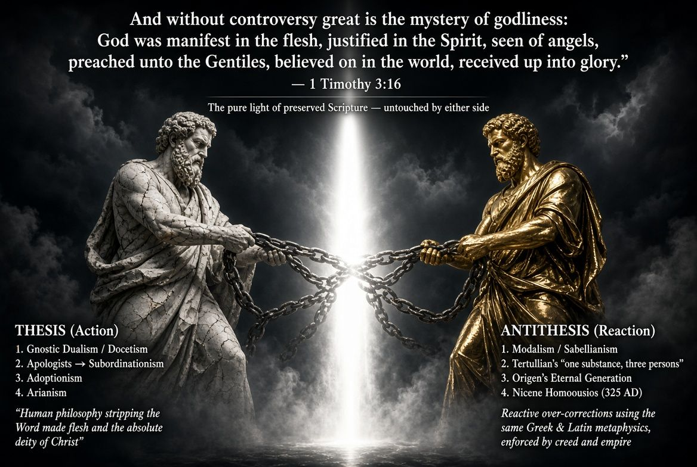

Fundamentalism versus Vain Philosophy
Where the Scripture presents mystery, the fundamentalist stops.
✦ ✦ ✦The Mystery of Godliness
And without controversy great is the mystery of godliness: God was manifest in the flesh, justified in the Spirit, seen of angels, preached unto the Gentiles, believed on in the world, received up into glory.1 Timothy 3:16
Where the text of scripture presents mystery, “great is the mystery of godliness,” the fundamentalist stops, where the philosopher and the theologian continue, pressing on in their vain imagination.
Revelation and Faith
The truth is not found by the reasoning of men. It is by the revelation of scripture, and by understanding that some things our finite brain cannot comprehend. And accepting those things by faith.
God revealed it. God did not explain it. We believe it.
Compare scripture with scripture
Heresy Answered with Heresy
We see people debate the various vain philosophies of men used to explain the position of the Father, the godhood of the incarnate Jesus, the Trinity, the person of the Spirit, and the unity of it all, in the fallible and weak terms of men.
Biblical fundamentalism is superior to theology. Heresy answered with heresy is not how we find the truth.
Compare scripture with scripture
The Trap of the “Closer” Answer
Way too many Christians, saved, Bible-believing Christians at that, see an answer to a clear heresy that is closer to the truth, and accept that doctrine as solid. They lean on the understanding of traditions. The consensus of the crowd.
Closer to the truth is not the truth. An error that corrects another error is still an error, and the man who adopts it has only traded one tradition of men for another.
Compare scripture with scripture
The Back-and-Forth Away from the Bible

Each error provoked a reaction. Each reaction became its own error. Thesis produced antithesis, and both sides pulled on the same chains: the categories of Greek and Latin philosophy. Neither one stood in the light of the plain text.
The Hegelian Cycle, c. 90–381 AD
Thesis (action) · Antithesis (reaction) · Synthesis
The Core Pattern
Each step refused to stop where Scripture stops.
Thesis produced antithesis. Both remained inside Greek or Latin philosophical categories. The result was progressive distance from the plain statements of the preserved text, and from the humble acceptance of mystery.
| The philosopher’s way | The fundamentalist’s way |
|---|---|
| Answer error with a counter-theory. | Answer error with the text. |
| Borrow the world’s vocabulary to close the gap. | Speak in the words the Holy Ghost teacheth. |
| Enforce the result by creed and council. | Stop where Scripture stops, and believe. |
Where Scripture Stops, We Stop
The fundamentalist does not feel obligated to supply the missing metaphysical machinery that finite minds invent to close the gap. And we don’t need to take sides in the back-and-forth debates of differing heretical schools of thought.
We are not on the stone side or the gold side. We are not obligated to pick the lesser error. We stand where the light falls: on what God said.
No Prepackaged Beliefs
Fundamentalists should never accept presuppositions and systematics that require us to adopt a set of beliefs that come prepackaged, regurgitating apologetics because others before us accepted them whole cloth.
Always search the scripture to see if it is so. And if you cannot draw a clear, direct understanding of a doctrine or view from plain language and context, then it is okay, and in fact wise, to leave it to faith and admit your ignorance as fallible, finite man.
Compare scripture with scripture
Pure Bible, Not “Sola Scriptura”
The fundamentalist rejects the theologian’s “Sola Scriptura” for pure Bible. The theologians use the logic of men, the writings of church fathers and reformers and past generations of men, to claim the Bible should be the final arbiter of doctrine.
That sliver of daylight given to the authority of tradition and man’s philosophy invites error just as much as the other attempts to answer bad doctrine.
“Final arbiter”
The Bible judges, but tradition, the fathers, and the reformers sit at the table.
Only authority
The Bible alone speaks for matters of faith and practice. Nothing else sits at the table.
Scripture Compared with Scripture
Taking scripture compared to scripture as the only means of finding truth, and allowing the Bible to be the only authority for matters of faith and practice, avoids these traps.
All scripture is given by inspiration of God, and is profitable for doctrine, for reproof, for correction, for instruction in righteousness: That the man of God may be perfect, throughly furnished unto all good works.2 Timothy 3:16-17
Throughly furnished. The man of God does not need a supplement.
Liberty on Secondary Matters
The general understanding of Romans 14, that on secondary matters men may disagree and be fully persuaded in their own minds, without judging another man’s servant, makes fundamentalism the way.
Primary doctrine is clear. God is not the author of confusion. But where we see through a glass darkly, there is room for brotherly disagreement.
Compare scripture with scripture
Three That Bear Record
For there are three that bear record in heaven, the Father, the Word, and the Holy Ghost: and these three are one.1 John 5:7
The Bible does not demand that we figure out the metaphysical mechanics of how three can be one. It simply states the fact of their heavenly record and their absolute unity, leaving no room for human rationalization.
What Scripture Does Not Say
Scripture doesn’t get into the mode, the essence, the hypostatic union, the filioque, or any other nonsense used to debate endlessly the vain wisdom of man.
The words of man’s wisdom
Mode. Essence. Substance. Hypostatic union. Filioque. Eternal generation.
The words the Holy Ghost teacheth
The revealed names, Father, Word, and Holy Ghost, and the fact that these three are one.
It identifies them by their revealed biblical names, Father, Word, and Holy Ghost, and states the undeniable fact that these three are one.
By Water and Blood
This is he that came by water and blood, even Jesus Christ; not by water only, but by water and blood. And it is the Spirit that beareth witness, because the Spirit is truth.1 John 5:6
God anchors the reality of Jesus Christ to historical facts. He was born of water, the incarnation, and He came by blood, the death and resurrection. And the person of the Spirit bears witness to Christ’s factual existence and the truth of the gospel.
There is no need to explain what we know is true. It is just true.
The Witness of God Is Greater
If we receive the witness of men, the witness of God is greater: for this is the witness of God which he hath testified of his Son.1 John 5:9
The theologian and the seminarian and the other “experts” seek to gain our confidence in them. In their arguments and their theories and their jargon.
But the witness of God is greater.
The Witness in Himself
He that believeth on the Son of God hath the witness in himself: he that believeth not God hath made him a liar; because he believeth not the record that God gave of his Son.1 John 5:10
We have the Spirit of truth, who teaches us all things. Who does not speak of Himself, but the good things of God.
Compare scripture with scripture
Comparing Spiritual Things with Spiritual
Now we have received, not the spirit of the world, but the spirit which is of God; that we might know the things that are freely given to us of God. Which things also we speak, not in the words which man’s wisdom teacheth, but which the Holy Ghost teacheth; comparing spiritual things with spiritual.1 Corinthians 2:12-13
What more do we need?
This Is the True God
And we know that the Son of God is come, and hath given us an understanding, that we may know him that is true, and we are in him that is true, even in his Son Jesus Christ. This is the true God, and eternal life.1 John 5:20
This speaks expressly of the truth we have known, and the gift of eternal life, that we may know Him. The truth that is the true God.
So don’t let theologians and men wise in their own conceits tell you that you need to be “educated” as they are to know the truth.
Compare scripture with scripture
Lest Any Man Beguile You
For I would that ye knew what great conflict I have for you, and for them at Laodicea, and for as many as have not seen my face in the flesh; That their hearts might be comforted, being knit together in love, and unto all riches of the full assurance of understanding, to the acknowledgement of the mystery of God, and of the Father, and of Christ; In whom are hid all the treasures of wisdom and knowledge. And this I say, lest any man should beguile you with enticing words.Colossians 2:1-4
The beguiling men with enticing words seek to lead us from the truth. Paul in the Spirit is giving prophecy that applies to Christians today as much as it did the Colossians and the Laodiceans.
Our hearts may be comforted with the full assurance of understanding, even as we acknowledge the mystery of God. Of the Father, and of Christ, in whom are hid all the treasures of wisdom and knowledge.
Rooted and Built Up in Him
As ye have therefore received Christ Jesus the Lord, so walk ye in him: Rooted and built up in him, and stablished in the faith, as ye have been taught, abounding therein with thanksgiving. Beware lest any man spoil you through philosophy and vain deceit, after the tradition of men, after the rudiments of the world, and not after Christ. For in him dwelleth all the fulness of the Godhead bodily.Colossians 2:6-9
We have received Christ, sealed by the Spirit; we are rooted in Him. We are called to walk in Him. And because we are established in the faith, secure in our knowledge of the truth, we can never deny Him. But we can be spoiled by deceivers.
Led away by vain traditions of men, following the ways of the world, the logic of men. Following the theology and theory and disputations of denominations and schools of thought, instead of Christ.
All the Fulness of the Godhead Bodily
The fulness of the Godhead is stated as a fact, in Christ. The scripture does not seek to define His “essence,” substance, or the mechanics of that fulness. God’s word simply declares it as truth, and then warns against the very methods that later generations of men would use to elaborate it.
What Paul warned against
Philosophy. Vain deceit. The tradition of men. The rudiments, the elementary principles, of the world: the natural man’s view.
What came after
Vain and puffed-up philosophy. Groups of men with creeds and confessions that add to and take away from the things of Christ.
Teaching for doctrines the commandments of men
Intruding into Things Not Seen
Let no man therefore judge you in meat, or in drink, or in respect of an holyday, or of the new moon, or of the sabbath days: Which are a shadow of things to come; but the body is of Christ. Let no man beguile you of your reward in a voluntary humility and worshipping of angels, intruding into those things which he hath not seen, vainly puffed up by his fleshly mind,Colossians 2:16-18
These are the tip of the iceberg: the various ways false teachers use their own imagination to invent how we should live and what we should do, condemning those of us who place our trust entirely in Christ and His word.
The Witness Is God’s
You do not need the seminary’s vocabulary, the council’s creed, or the philosopher’s system to know the Son of God. The Father, the Word, and the Holy Ghost bear record, and these three are one. Christ came by water and blood. In Him dwelleth all the fulness of the Godhead bodily. Where God has spoken, we believe. Where God has drawn the curtain of mystery, we stop, and we worship.
God Himself testifies with us the truth of His Son. Amen.
Memory Verse
Beware lest any man spoil you through philosophy and vain deceit, after the tradition of men, after the rudiments of the world, and not after Christ.Colossians 2:8
- calls the mystery of godliness “without controversy.” Why did men turn it into centuries of controversy?
- Look at the cycle. At what point should each side have simply stopped and said, “Thus saith the Lord, and no further”?
- What is the difference between the Bible as the “final arbiter” and the Bible as the only authority? Why does the sliver of daylight matter?
- Name a doctrine you were taught that you have never checked against the plain text. How would you search the scripture “whether those things were so”?
- Where is the line between primary doctrine, which is clear, and the secondary matters of Romans 14? How do we keep brotherly love on the second without compromising the first?